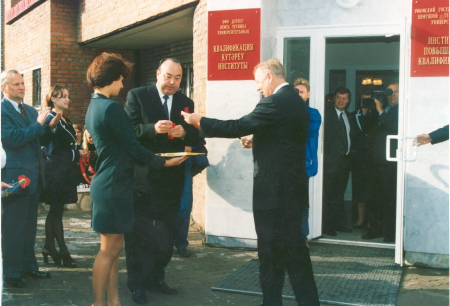
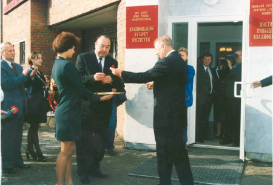

20002010

 
2000
Сотрудники кафедры бурения УГНТУ и ГНПП "Азимут": М.Р. Мавлютов, Х.И. Акчурин, Л.А. Алексеев, Ф.Г. Галиакбаров, Г.Г. Ишбаев, Г.В. Конесев, Ю.Г. Матвеев, А.Н. Попов, А.И. Спивак и Б.Н. Трушкин удостоены премии Правительства РФ в области науки и техники.
2010
Г.В. Конесев
Галиакбаров, Г.Г
Х.И. Акчурин
М.Р. Мавлютов
Галиакбаров, Г.Г
Л.А. Алексеев
Г.В. Конесев
Ишбаев, Г.В
2000
Сотрудники кафедры бурения УГНТУ и ГНПП "Азимут":
М.Р. Мавлютов,
Х.И. Акчурин,
Л.А. Алексеев,
Ф.Г. Галиакбаров,
Г.Г. Ишбаев,
Г.В. Конесев,
Ю.Г. Матвеев,
А.Н. Попов,
А.И. Спивак и
Б.Н. Трушкин удостоены премии Правительства РФ в области науки и техники.
М.Р. Мавлютов,
Х.И. Акчурин,
Л.А. Алексеев,
Ф.Г. Галиакбаров,
Г.Г. Ишбаев,
Г.В. Конесев,
Ю.Г. Матвеев,
А.Н. Попов,
А.И. Спивак и
Б.Н. Трушкин удостоены премии Правительства РФ в области науки и техники.
устройства роботизированные устройства
2000
Одно из первых роботизированных устройств в УГНТУ
2001
Введен в эксплуатацию после капитального ремонта 7-й учебный корпус площадью 8000 м2.
В марте в УГНТУ побывал министр образования РФ В. М. Филиппов.
2002
В марте в УГНТУ побывал министр образования РФ
В. М. Филиппов.
В. М. Филиппов.
2002
2002
Первый в регионе выпуск студентов по специальности «Связи с общественностью», внесенной Министерством труда Российской Федерации в «Квалификационный справочник должностей руководителей, специалистов и других служащих».
2002
2002
Театру УГНТУ «СтАрт» присуждено звание «народный».
звание «народный»
2002
Построен теплоход «Девон», оснащенный новейшим навигационным оборудованием и предназначенный для учебной практики студентов вуза.
4 января университет посетил президент России В.В. Путин
2003
2003
президент России посетил УГНТУ
президент России посетил УГНТУ
4 января университет посетил президент России В.В. Путин
2003
В марте после ремонта открылся Дом физической культуры.
2004
Театр танца "Витраж" стал лауреатом I степени на открытом общенациональном фестивале-конкурсе дарований «Таланты нового века — 2004».
2004
2004
На регулярной основе в универ проходят ярмарки вакансий с участием ведущих предприятий Топливно-энергетического комплекса
2006
2006
Визит министра образования и науки РФ А.А. Фурсенко.
2007

2007
Первокурсники активно участвуют в творческой жизни университета. Особенно популярен конкурс "Премьер".
2008
2008
19 мая после капитального ремонта состоялось открытие учебно-лабораторного корпуса № 2.
2008
2008
15 октября в УГНТУ впервые состоялась защита докторской диссертации иностранным гражданином. Представитель Республики Мозамбик Консейсао Аугусто Агостино защитил докторскую диссертацию на тему «Разработка новых сорбентов и адгезионных нефтесборщиков для сбора аварийных разливов углеводородов» (научн. рук. Н.А. Самойлов).
2008
2008
Студентка гр. ПБ-07-01 Оксана Савченко стала трехкратной чемпионкой в плавании на параолимпиаде в Пекине. Затем в 2012 году стала пятикратной чемпионкой в параолимпиаде в Лондоне.
2008
2008
28 ноября Президент Башкортостана открыл образовательный центр «Музей истории УГНТУ» и принял участие в торжествах по случаю 60-летия университета.
2009
2009
Сборная КВН УГНТУ выиграла Кубок вузов Башкортостана.